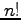
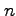

We have already encountered some of the building blocks for programming in Maple. For instance, we saw how to use for loops to fill the entries of a matrix. We will now explain how to write our own callable functions in Maple. Our first example will be a function to compute the factorial  of an integer .
fact := proc(n)
local i,prod;
if ( n < 0 ) then
return("n must be positive");
end;
prod := 1;
for i from 1 to n do
prod := i * prod;
end;
return(prod);
end;
The first line above tells Maple that the name of our function is fact and that it takes one input. To call our function once we have entered the text above into Maple, we simply type
fact(3); fact(-1); # 6 # "n must be positive"
The second line in our procedure is there so that Maple knows only to use the indicated variables within a function call to fact and nowhere else in your worksheet. For a recursive implementation of , one has the following code.
fact := proc(n)
if ( n = 1 ) then
return(1);
end;
return(n * fact(n-1));
end;
Another type of loop is the while loop.
collatz := proc(n)
local m,count;
count := 0;
m := n;
while ( m > 1 ) do
if ( modp(m,2) = 0 ) then
m := m/2;
else
m := 3*m+1;
end;
count := count + 1;
end;
return(count);
end;
This function returns the number of iterations required to bring an integer down to using the Collatz recurrence. It is a deep open problem to determine if the while loop above always breaks.
Finally, we mention a useful package combinat in Maple for indexing over permutations and combinations.
with(combinat);
# indexing over all combinations
C := choose(5,2);
for c in C do
print(c);
end;
# indexing over all permutations
P := permute(3);
for p in P do
print(p);
end;
# indexing over all subsets
S := subsets({x,y,z}):
while not S[finished] do
S[nextvalue]()
end;